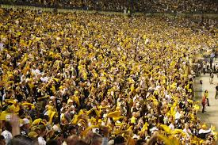

Cultura
Mascote
Use este documento como uma maneira de iniciar um novo projeto, rapidamente.
Tudo oquê você
começa é com este texto e um documento HTML (quase vazio).
Steely McBeam está presente em todos os jogos em casa e participa dos programas de caridade da equipe e de outros eventos patrocinados pelo clube. O autógrafo de Steely é conhecido por ser desenhado com um S superdimensionado, e o L é desenhado para parecer um feixe de aço.
Steely McBeam dando autógrafos para os fãs nos treinos do Steelers em 2 de agosto de 2007Torcida
Os Steelers têm uma grande base de torcedores, que se espalhou a partir de Em agosto de 2008, a ESPN.com classificou os torcedores dos Steelers como os melhores da NFL, citando sua sequência de 299 jogos consecutivos lotando o estádio. A equipe ganhou uma grande base de torcedores nacionalmente por causa de seu sucesso na década de 1970, mas muitos consideram o colapso da indústria siderúrgica da cidade no final daquela década (e a diáspora resultante) como um grande catalisador para o tamanho da torcida em outras cidades. Os Steelers vendem todos os ingressos para os jogos em casa desde a temporada de 1972.
O Pittsburgh Steelers tem várias torcidas não-oficiais em muitas cidades do país, que normalmente se encontram
em bares nos dias de jogos. Sabe-se que esse fenômeno ocorre também com outras equipes da NFL, mas os "Steeler
bars" são mais famosos do que a maioria, inclusive em quantidade de estabelecimentos representativos, mesmo em
cidades que abrigam suas próprias equipes da NFL.
A "Terrible Towel" ("Toalha Terrível") foi descrita pela Associated Press como "indiscutivelmente o símbolo de
torcida mais conhecido de qualquer grande equipe esportiva profissional". Concebido pelo locutor Myron Cope em
1975, os direitos foram concedidos à Allegheny Valley School, em Coraopolis, Pensilvânia, que cuida de mais de
novecentas pessoas com deficiência intelectual e física, incluindo o filho autista de Cope.
Desde 1996, os
lucros da Terrible Towel ajudaram a arrecadar mais de 2,5 milhões de dólares para a escola